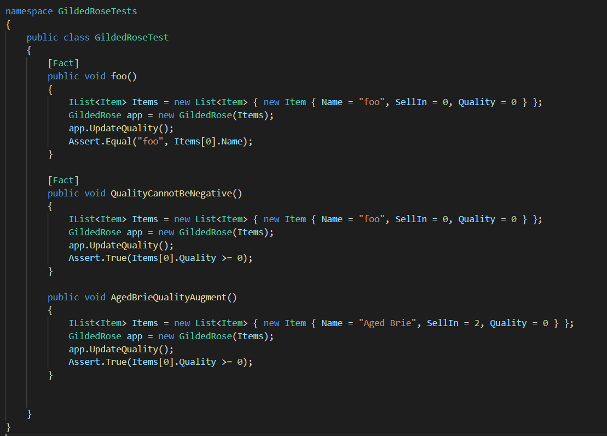
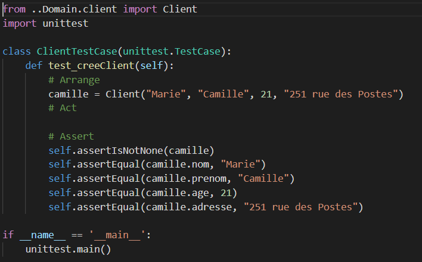
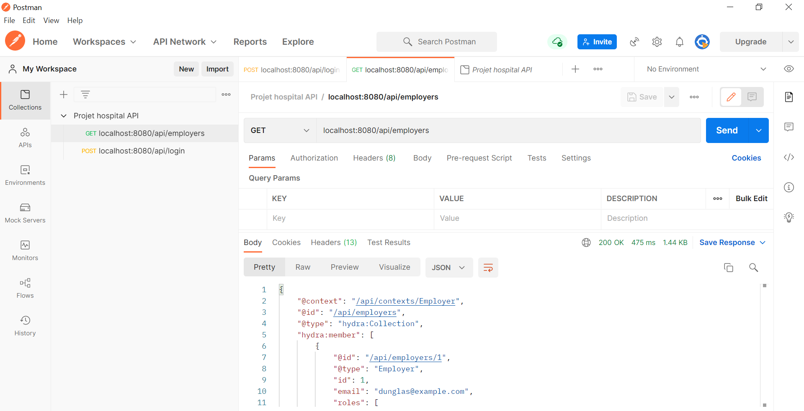

Dans certains projets, j'ai créé des tests unitaires pour valider le bon fonctionnement d'un programme.
J'ai utiliser des tests d'intégration et de non régression principallement en C# et en python.
Dans l'exercise en C#, la mission était de refactorer un code fonctionnel en utilisant des tests pour s'assurer que le code continue d'avoir le fonctionnement attendu.
Dans l'exercise en python, il s'agissait de développer des classes en s'assurant du bon fonctionnement de celles-ci.
Lors du développement de l'API pour ce logiciel, j'ai utilsier postman pour automatiquement tester le retours de plusieurs requêtes pour s'assurer de leur bon fonctionnement a chaque changement.
